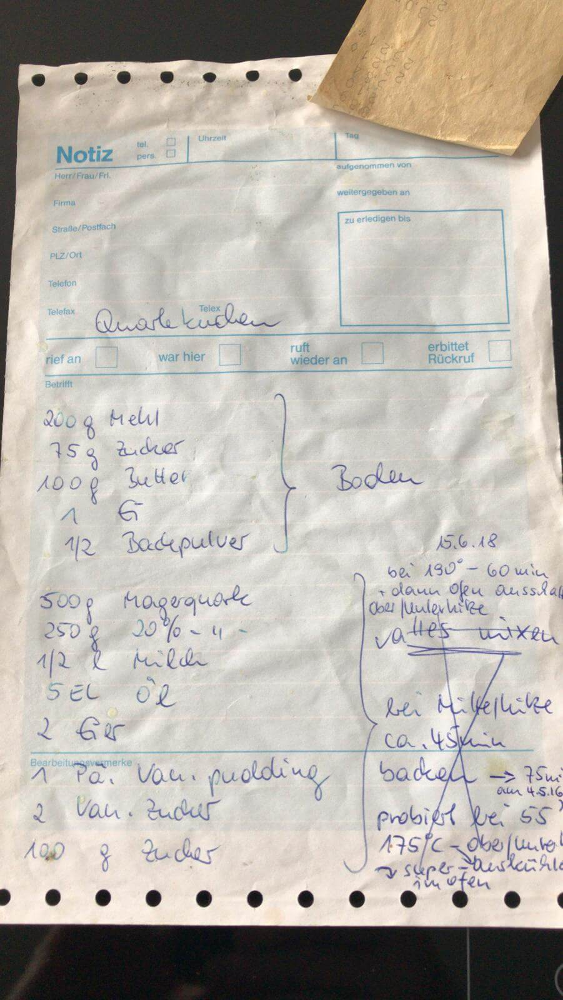

Quarkkuchen / "Käsekuchen"
Zutaten
Boden:
ℹ️ es handelt sich um einen Mürbteig:
- 200 g Mehl (Type
405) - 75 g Zucker (wenn möglich fein)
- 100 Butter (zimmerwarm)
- 1 Ei
- ½ Päckchen Backpulver
Füllung:
- 500 g Magerquark
- 250 g Quark 20%
- 500 ml Milch
- 5 Esslöffel Öl
- 2 Eier
- 1 Päckchen Vanillepudding
- 2 Päckchen Vanillezucker
- 250 g Zucker (wenn möglich fein)
Zubereitung
- Boden verkneten
- in Backform verteilen
- Rand leicht hochziehen 2. Füllung verrühren
- auf den Boden gießen 3. Im Backofen bei 190 °C für 60' backen, danach ausschalten und im heißen Backofen ruhen lassen
Quelle: meine Muddsch.